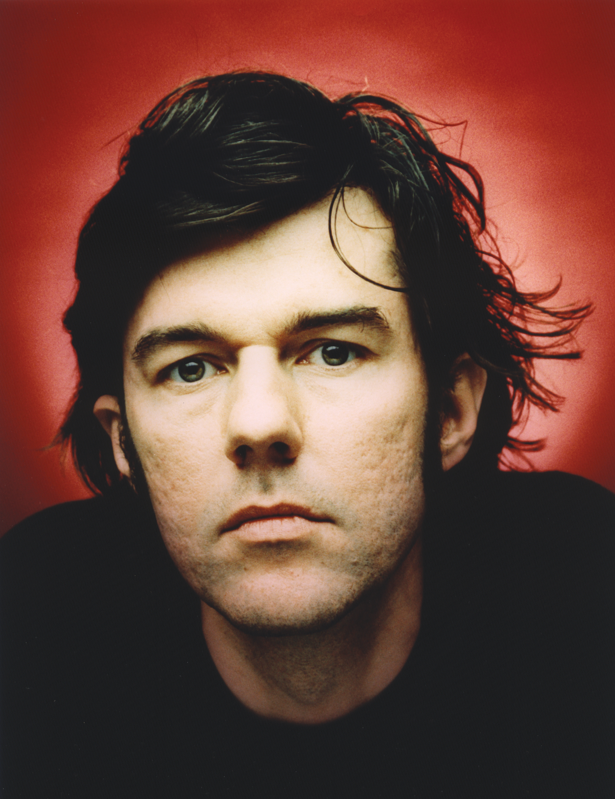
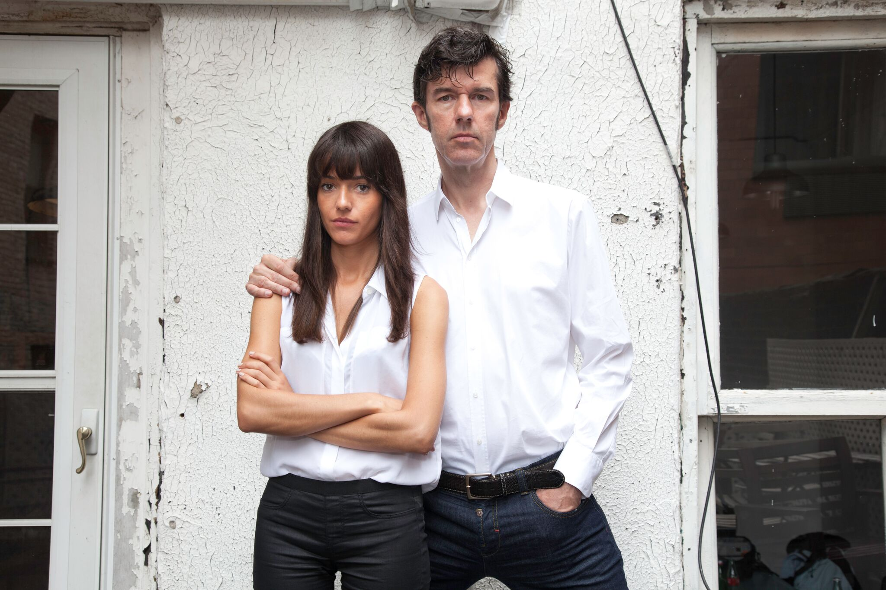
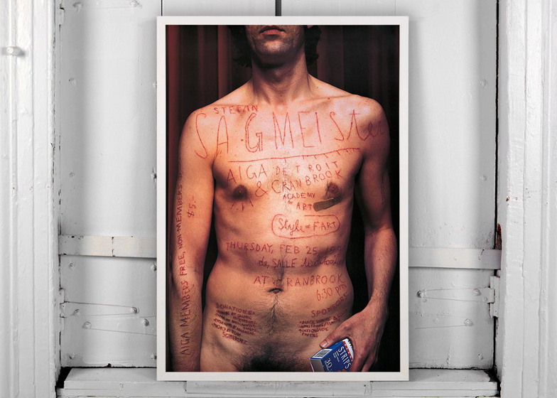
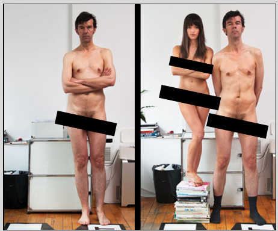

Stefan Segmeister
Graphic Designer and Founder of Segmeister & Walsh
Stefan Segmeister is a visual designer and communicator that pushes the boundaries of design with every piece of work that he creates and prides himself on how revolutionary his work can be inspiring young designers everywhere to push their boundaries and to take a step back to realise what the happiest situations in your life can bring fore great design.
The Early Years
Sagmeister was born 6th august 1962 in Austria. He didn’t always want to be a designer as in his early years he had his mind set on being an engineer and after he graduated junior school he joined an engineering college however at the age of 15 he changed over to a graphic design course. At the age of 15 Sagmiester was adventurous and wanted to work in the graphic design industry as soon as possible, he set off his career with an Austrian youth magazine called Alphorn. He showed how he was before his own time in the magazines article on “Alphrons Anarchy”, for the article he got other students from the school to create the letter A in the playground which he submitted to the magazine as an experimentation of his own. Showing from an early age that having confidence in what you believe will be great design before anyone else has been able to think this far forward, he takes the idea of typography and completely flips it on its head. This is a trend that you will see in Sagmeisters work as he uses various objects, people and animals to create typography of his own. A few years later on his second attempt of applying he got into the University of Applied Arts Vienna to study Graphic Design and then obtained a Fulbright scholarship for the New York based Pratt Institute as a show of his great work. Although he had to return for mandatory militarily service but while back he work in a refugee centre as community service instead having had completed 3 years of studies in America meaning he was never too far away from his work showing that if you have the drive there is always a way to keep your passion alive. In his duration back in Austria he still had time to focus on his graphic design work until he was able to get himself a job in Hong Kong doing what he loved most, Typography. Sagmeister is renowned for having no limits or filter to his work this talent and an audacious piece of work is what caught the eye of M&Co (design company) which were based in New York. He fell in love with the big city and said that when living in the Alps as a young boy he wished of nothing more than to live and explore big cities.
Album Covers
In his early graphic design career Sagmesiter found a strong love for music. So, he began creating music graphics such as posters and album covers. Sagmeister, as he still is now, was a very particular man and he believes to really produce your best work you have to be interested in what you are working on, so he would only work on the music that he preferred. He founded his original business in 1993 and named it Sagmeister Inc. When he first set off he wasn’t as popular but then he heard of a friend making a CD, Zinkers 'Mountain of Madness' and took this opportunity to make his album cover. He made the album cover into an optical illusion and used the colours green and red to blend the cover. This gained him worldwide recognition and also gave him four Grammy awards nominations for this cover. He then was asked by Lou Reed (American musician, singer and songwriter as well as lead guitarist, singer and principal songwriter for the rock band the Velvet Underground) to design the album cover for, Set the Twilight Reeling, in 1996. Sagmeister then followed on the path of making album covers and posters for other famous bands most notably for the Rolling Stones and their album “Bridges to Babylon”.

I remember a sentence in a Minale Tattersfield book that said: "In my experience, every designer whose prime aim in going into business was to make money while at the same time producing good design, failed on both counts. I believe that designing is something you have to do for love. If you are committed first and foremost to producing good design then you'll make money as a by-product because good design is something people are willing to pay for. But that financial reward will be a bonus, a gift." I agree.
—Stefan Segmeister, 2018 (Segmeister & Walsh website)
Jessica Walsh
More recently Sagmeister is now the founder of “Sagmneister & Walsh” which is based in New York City. The other founding member of his creative agency is Jessica Walsh and while she is 20 years younger than Sagmeister she has an astonishing list of clients she has previously worked for such as Jay-Z, Barneys, The Museum of Modern Art and Levi’s to name just a few. She is known worldwide, and her work has been published in galleries, magazines and museums around the world and her book that she wrote called “40 days of dating” is already in the motions to becoming a movie.
Sagmeister has previously spoken about how he doesn’t feel the need to be looking for the big money move and that if someone is trying to become a designer purely for greed and money they will never become one. He uses a quote from Minale Tattersfields book that said: “every designer whose prime aim in going into business was to make money while at the same time producing good design, failed on both counts…if you are committed first and foremost to producing good design then you’ll make money as a by-product” which I couldn’t agree with more. He says that the best ways to find inspiration is by going out and experiencing the world around us. He has said that his favourite place to gather inspiration is on a train and from my own experience this couldn’t be more effective, personally I feel more inspired while looking at a large landscape this emotionless feeling gives me time to think about my designs. Sagmeisters speaks about letting inspiration come to you and I find there is no better place than sitting with a sketchpad and sketching/pencilling down ideas.
In Sagmeisters talks he speaks about how he is an avid list maker and that he loves making lists so that he doesn’t lose ideas and hopefully gathers ideas along the way. In one of his lists he writes down things in life that makes him happiest, months pass by until he is asked to produce segment pages for a magazine to break it up into different sections and he looked back at the times he had felt happy and used this words to create typography out of real life materials placing toilet paper around trees that he found in the woods to spell out the word ‘having’ when looked at by a certain angle but more interestingly he also used animals in his typography for his film called ‘the happy film’. He places out carefully the typography he wanted using bananas, watermelons and seeds then let the animals take what they wished of the display while videoing how this was done. After he had obtained the footage he reversed the video so that it looked as if the animals were placing the typography there themselves added a clever and humorous twist to his typography.


Inspiration On Me
This outside the box thinking really inspires me and makes me understand that anyone can simply produce pieces of work that is similar to others around them but Sagmeister really looked for a more creative option to ensure that he makes a new trend rather than simply following someone else’s.  Stefan Segmeister and His New Buiness Parter Jessica Walsh He was well known as being an extremist and always took his branding to the next level and he even went as far as using nudity and self-harm as a part of his work. For his poster for the AIGA Detroit lecture Stefan requested his intern martin to carve typography into his skin, which in anyone’s book is a completely ridiculous but outstanding way to gather media attention.
When starting up his own company, Sagmeister inc. he posted completely naked quoting simply the places that he had previously worked e.g. TBWA in London, Leo Burnett in hong kong and M&Co in New York then stated “I am now opening up my own company. SAGMEISTER INC.” 19 years later Sagmeister then states that he will be openings his new creative agency doing the same photos only adding Jessica Walsh in beside him, 19 years apart still having the same astonishing effect. He is also famous for his yearlong sabbatical he takes after ever 7 years of working to regroup thoughts make his mind free and to ultimately relax his mind so when he comes back fresh he will be able to come up with ideas that will once again change the world of design. He has had 3 of these sabbaticals over his time incharge of his company’s and says that each on he uses to reflect on the work that he has done previously. Each time he comes back he will start on a new journey changing what disciplinary route he will take and now his company caters for any sort of media design discipline you could imagine from his original graphic design to movie production and photo editing again this is key too why he is so inspiring to me as he has no only mastered the graphic design world with his typography but he decided that with the skilled team he has built around him in his company he is able to take on any challenge the design work puts before him.
Conclusion
In conclusion I feel that Stefan Sagmeister is not only one of the most influential people for graphic design but is only one of the most exciting designer around with never limiting himself and always making sure that happiness is top of his list of priorities, as a young student I feel as that stress and live going on around you moves so fast and that is it easy to simply give up what I love doing and taking an easier route in life until I read about people who have done things that not only are unbelievable pieces of art but also are in good humour also because Sagmeister is sometimes nothing short of crazy but if that what it takes to become a great designer then please by all means sign me up.